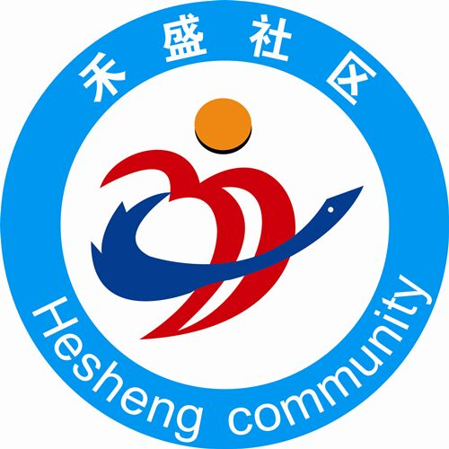

<!DOCTYPE html>
<html lang="en">
<head>
    <meta charset="utf-8">
    <meta http-equiv="X-UA-Compatible" content="IE=edge,chrome=1">
    <title>一键导航</title>
    <meta name="format-detection" content="telephone=no"/>
    <meta name="format-detection" content="email=no"/>
    <meta name="viewport" content="width=device-width, initial-scale=1, maximum-scale=1, user-scalable=no">
    <meta name="apple-mobile-web-app-capable" content="yes">
    <meta name="apple-mobile-web-app-status-bar-style" content="black">

    <script type="text/javascript" src="http://webapi.amap.com/maps?v=1.3&key=5342c606f0e47557ae6edba0e704570f&plugin=AMap.AdvancedInfoWindow"></script>
    <link rel="stylesheet" href="./../css/base.css">
    <style>
        html {
            font-size: 12px;
        }
        #container {
            width:100%;
            height: 100%;
            position: absolute;
            left: 0;
            top: 0;
        }
        .c-title {
            height: 32px;
            line-height: 32px;
            background-color: #24936e;
            font-size: 16px;
            color: #fff;
            padding-left: 4%;
        }
        .con:after {
            content: '';
            display: block;
            height: 0;
            visibility: hidden;
            clear: both;
        }
        .con > p {
            font-size: 16px;
            line-height: 30px;
            position: relative;
            top: 10px;
            left: 3%;
        }
        .con > img {
            width: 66px;
            float: left;
            padding: 8px;
        }
        .amap-icon img {
            width: 100%;
        }
        #panel {
            position: absolute;
            background-color: white;
            max-height: 40%;
            overflow-y: auto;
            bottom: 0%;
            left: 0;
            width: 100%;
            /* border: solid 1px silver; */
            z-index: 999;
        }
        .amap-info-tabs {
            border-top: 1px solid #ccc;
        }
        .amap-info-tab {
            display: inline-block;
            width: 50%;
            text-align: center;
            font-size: 13px;
            border-bottom: 1px solid #ccc;
        }
        .amap-info-tabs .selected {
            background-color: #fefefe;
            border-bottom: 0;
        }
        .tab-icon {
            width: 18px;
            height: 18px;
            display: inline-block;
            vertical-align: middle;
            background: url(http://webapi.amap.com/theme/v1.3/images/amap-info.png) no-repeat;
        }
        .amap-info-tabs .amap-info-tab:nth-child(1) .tab-icon {
            background-position: 0 1px;
            border-left: 0;
        }
        .amap-info-tabs .amap-info-tab:nth-child(2) .tab-icon {
            background-position: 0 -50px;
        }
        .amap-bar {
            padding: 8px;
            font-size: 12px;
        }
        .amap-around {
            display: none;
            margin-top: -8px;
        }
        #tips-search {
            width: 72%;
            height: 20px;
            border: 0;
            padding: 1px 4px;
            background-color: #fff;
            border: 1px solid #ccc;
            border-radius: 1px;
        }
        .amap-around .input-label {
            display: inline-block;
            background: url(http://webapi.amap.com/theme/v1.3/images/amap-info.png) 10px -197px no-repeat #0091ff;
            border: none;
            border-top-right-radius: 2px;
            border-bottom-right-radius: 2px;
            color: #FFF;
            width: 30px;
            height: 24px;
            line-height: 24px;
            text-indent: -9999em;
            cursor: pointer;
            margin-right: 0;
            padding-right: 6px;
            position: relative;
            top: 8px;
        }
        .input-label {
            margin-right: 6px;
        }
        #tips {
            width: 34%;
            height: 20px;
            border: 0;
            padding: 1px 4px;
            background-color: #fff;
            border: 1px solid #ccc;
            border-radius: 1px;
            margin-right: 8px;
        }
        .nav-icon {
            padding: 4px 3px 4px 20px;
            border: 1px solid #c9c9c9;
            margin-right: 4px;
            border-radius: 2px;
            background: url(http://webapi.amap.com/theme/v1.3/images/amap-info.png) no-repeat;
            cursor: pointer;
        }
        .nav-drive {
            background-position: 2px -245px;
        }
        .nav-bus {
            background-position: 2px -298px;
        }
        .nav-walk {
            background-position: 6px -346px;
        }
        .hovered {
            background-color: #0091ff;
            border-color: #0091ff;
            color: #fff;
        }
        .nav-drive-hover {
            background-position: 2px -396px;
        }
        .nav-bus-hover {
            background-position: 2px -447px;
        }
        .nav-walk-hover {
            background-position: 6px -497px;
        }
    </style>
</head>
<body>
<div id="container"></div>
<div id="panel"></div>

<script src="./../js/lib/jquery.min.js"></script>
<script src="./../js/lib/common.js"></script>
<script>
    $(function(){
        Util.common.setWxTitle("一键导航");
    });
</script>
<script>
    var lnglat = [118.155336,24.514861];
    var map = new AMap.Map('container',{
        zoom: 15,
        center: lnglat
    });
    //标记
    var marker = new AMap.Marker({
        map: map,
        position: lnglat,
        icon: new AMap.Icon({
            size: new AMap.Size(18, 26),  //图标大小
            image: "./../images/map.png",
            imageOffset: new AMap.Pixel(0, 0)
        })
    });
    marker.setMap(map);
    map.setCenter(marker.getPosition());

    //信息窗
    //AMap.plugin('AMap.AdvancedInfoWindow',function(){
    var infowindow = new AMap.AdvancedInfoWindow({
        content: '<h3 class="c-title">禾盛社区</h1>'+
        '<div class="con">'+
        '<p>社区服务中心<br>为人民服务</p></div>'+
        '<div class="amap-info-tabs">'+
        '<div class="amap-info-tab amap-tab-around"><span class="tab-icon"></span>在附近找</div>'+
        '<div class="amap-info-tab amap-tab-route selected"><span class="tab-icon"></span>到这里去</div></div>'+
        '<div class="amap-bar amap-route">'+
        '<span class="input-label">起点</span>'+
        '<input type="text" id="tips">'+
        '<span class="nav-icon nav-drive">驾车</span>'+
        '<span class="nav-icon nav-bus">公交</span>'+
        '<span class="nav-icon nav-walk">步行</span>'+
        '</div>'+
        '<div class="amap-bar amap-around">'+
        '<input type="text" id="tips-search">'+
        '<span class="input-label"></span>'+
        '</div>',
        offset: new AMap.Pixel(0, -30),
        placeSearch: false,
        asDestination: false,
        asOrigin: false,
    });
    infowindow.open(map, lnglat);
    marker.on('click',function(e){
        infowindow.open(map, lnglat);
    });
    //});
    //工具条
    AMap.plugin(['AMap.ToolBar','AMap.Scale'],function(){
        var toolBar = new AMap.ToolBar();
        var scale = new AMap.Scale();
        map.addControl(toolBar);
        map.addControl(scale);
    });

    window.onload = function() {
        setTimeout(function(){
            //输入提示
            var auto = new AMap.Autocomplete({
                input: "tips",
                city: '厦门市'
            });
            var auto2 = new AMap.Autocomplete({
                input: "tips-search",
                city: '厦门市'
            });
            //切换
            $('.amap-info-tab').on('click', function(){
                $(this).parent().find('.selected').removeClass('selected');
                $(this).addClass('selected');
                if($(this).hasClass('amap-tab-around')) {
                    $('.amap-around').show();
                    $('.amap-route').hide();
                }
                if($(this).hasClass('amap-tab-route')) {
                    $('.amap-route').show();
                    $('.amap-around').hide();
                }
            });
            //附近搜索
            $('.amap-around > .input-label').on('click', function(){
                AMap.service(["AMap.PlaceSearch"], function() {
                    var placeSearch = new AMap.PlaceSearch({ //构造地点查询类
                        pageSize: 5,
                        type: $('#tips-search').val(),
                        pageIndex: 1,
                        city: "0592", //城市
                        map: map,
                        panel: "panel"
                    });

                    var cpoint = [118.1970122166,24.4883444362]; //中心点坐标
                    placeSearch.searchNearBy('', cpoint, 200, function(status, result) {

                    });
                });
            });
            //
            $('.nav-icon').on('click', function(){
                infowindow.close();
                $(this).parent().find('.hovered').removeClass('hovered');;
                $(this).addClass('hovered');
                $('.nav-icon').removeClass('nav-drive-hover');
                $('.nav-icon').removeClass('nav-bus-hover');
                $('.nav-icon').removeClass('nav-walk-hover');
                if($(this).hasClass('nav-drive')) {
                    $(this).addClass('nav-drive-hover');
                    //驾车路线规划
                    AMap.plugin(["AMap.Driving"], function() {
                        var drivingOption = {
                            policy:AMap.DrivingPolicy.LEAST_TIME,
                            map:map,
                            panel: 'panel'
                        };
                        var driving = new AMap.Driving(drivingOption); //构造驾车导航类
                        //根据起终点坐标规划驾车路线
                        var ori = $('#tips').val();
                        driving.search([{keyword: ori},{keyword:'康利金融大厦'}]);
                    });
                }
                if($(this).hasClass('nav-bus')) {
                    $(this).addClass('nav-bus-hover');
                    //公交路线规划
                    AMap.plugin(["AMap.Transfer"], function() {
                        var transOptions = {
                            map: map,
                            city: '厦门市',
                            panel: 'panel',
                            //cityd:'乌鲁木齐',
                            policy: AMap.TransferPolicy.LEAST_TIME
                        };
                        var transfer = new AMap.Transfer(transOptions); //构造类
                        //根据起终点坐标规划驾车路线
                        var ori = $('#tips').val();
                        transfer.search([{keyword: ori},{keyword:'康利金融大厦'}]);
                    });
                }
                if($(this).hasClass('nav-walk')) {
                    $(this).addClass('nav-walk-hover');
                    //步行路线规划
                    AMap.plugin(["AMap.Walking"], function() {
                        var walkingOptions = {
                            map: map,
                            panel: "panel"
                        };
                        var walking = new AMap.Walking(walkingOptions); //构造类
                        //根据起终点坐标规划驾车路线
                        var ori = $('#tips').val();
                        walking.search([{keyword: ori},{keyword:'康利金融大厦'}]);
                    });
                }
            });


        }, 100);
    }
</script>

</body>
</html>